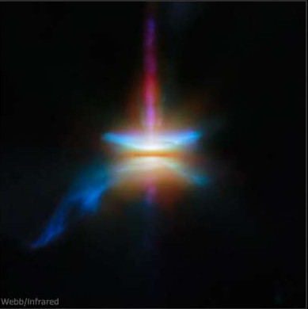

ERTH 110: Voyage of the Vicariance: Earth and Life through Time
Exploration of Earth history via an imaginary sailing voyage around the world and back in time to Earth’s formation and the origin of life. Introduces fundamental concepts in geology, paleontology, living systems, and evolutionary biology.
ERTH/ASTR 707: Exoplanet Astronomy
Three decades ago, the only planetary system we were certain of was our own. Now we know of thousands of systems; their diversity challenges our theories of planet formation and evolution, provides required context for understanding the Solar System, and is the foundation upon which rigorous searches for habitats and life elsewhere in the Universe will be built. This course exposes students to the present state of knowledge of planetary systems using representative data at the field’s leading edge, introduce key theoretical concepts and analytic and numerical tools with broad application, and develops teamwork, presentation, and publishing skills.